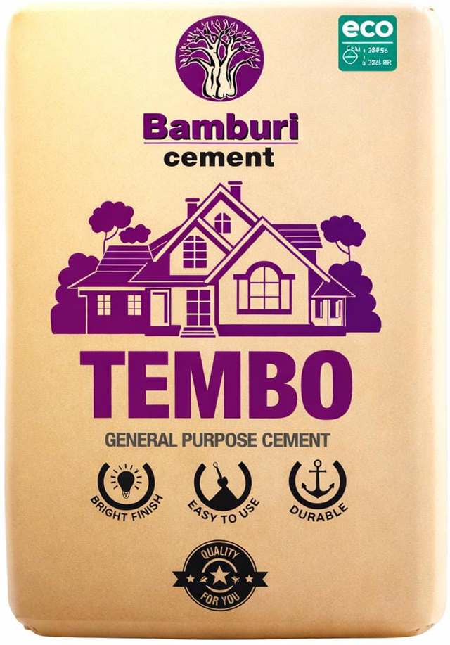

Bamburi Tembo is a high-strength Portland cement engineered for robust structural applications like foundations, columns, and slabs. Formulated to ensure superior compressive strength, it delivers long-lasting stability and exceptional load-bearing capacity. This cement is perfect for heavy-duty construction projects, providing dependable performance for critical infrastructure needs. Bamburi Tembo Cement is recognized for its consistent reliability and high quality.
Bamburi Tembo is a high-strength Portland cement engineered for robust structural applications like foundations, columns, and slabs. Formulated to ensure superior compressive strength, it delivers long-lasting stability and exceptional load-bearing capacity. This cement is perfect for heavy-duty construction projects, providing dependable performance for critical infrastructure needs.
Perfect for: Contractors, developers, and homeowners building foundations, columns, slabs, and other structural elements.
We deliver across Kenya to homes, construction sites, contractors, hardware stores and commercial developments.
Bamburi's Tembo Cement is a high-strength Portland cement, engineered for robust structural applications like foundations, columns, and slabs. Formulated to ensure superior compressive strength, it delivers long-lasting stability and exceptional load-bearing capacity. This cement is perfect for heavy-duty construction projects, providing dependable performance for critical infrastructure needs. Bamburi Tembo Cement is recognized for its consistent reliability and high quality.
Designed to achieve the desired final-day strength for durable concrete.
Enjoy smooth plastering and easy mixing for a wide range of projects.
Comes with improved sulphate resistance, ensuring resilience in challenging environments.
Bamburi Tembo Cement is ideal for a wide range of structural works in construction projects. Use it for laying bricks and blocks to build sturdy walls, plastering interiors for a smooth finish, and rendering exteriors to enhance durability. It's perfect for reinforcing concrete in foundations, columns, and slabs
For optimal results with Bamburi Tembo Cement, proper surface preparation is essential. Ensure the substrate is stable and leveled. Remove any loose materials or existing weak concrete. Eliminate contaminants like dust or grease using a wire brush or pressure wash. This prepares the surface for a strong bond, ensuring durable and lasting structural work.
Build strong, lasting structures with TEMBO 32.5N
Mixing TEMBO 32.5N correctly ensures optimal strength and workability for your project. Use clean water and quality aggregates that meet standards, and measure materials accurately with a bucket or wheelbarrow. Blend thoroughly until the mix is uniform in color, avoiding excess water to maintain concrete or mortar strength for applications like slabs or plaster.
Applying TEMBO 32.5N effectively enhances its versatility for mortar, concrete, or structural tasks. Whether plastering walls or pouring beams, skilled users should focus on even distribution, proper compaction, and smooth finishing. Follow mix design guidelines and cure the applied cement to achieve the desired strength and a professional, lasting result.
Safety and care are vital when using TEMBO 32.5N. Wear protective gear to avoid skin or eye irritation from wet cement, and store it properly to maintain quality. Use the minimum water needed, cure for at least 7 days, and dispose of waste responsibly. Following these precautions ensures safe handling and optimal performance for your construction needs.